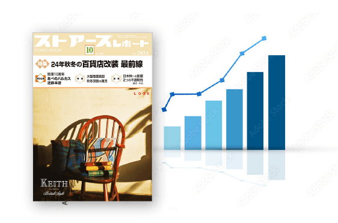

幅広いお客様にご活用いただいております
- 国内有名アパレルメーカー
- 独立系ディベロッパー
- 世界的なラグジュアリーブランド
- 土地活用コンサルティング会社
- 百貨店出店の化粧品メーカー
- 証券会社リサーチ部
- 大手食品メーカー
- 金融機関の不動産部門
-
 メーカー
メーカー 新商品の販売戦略や出店計画における市場調査の重要な参考資料となります。どの地域の百貨店でどのカテゴリーの商品が好調か分析することで、戦略を策定することが可能です。
-
証券会社などの金融機関
過去の売上げデータを把握するために利用されます。特に百貨店の株価予測や、投資対象企業の業績評価に役立ちます。投資判断を下すための有力な情報源となります。
-
ディベロッパーなどの不動産会社
新規商業施設の開発計画やテナント誘致の戦略に役立ちます。どのエリアでどの業態が強いのか消費傾向を分析することで効果的な開発やテナント選定を行うことができます。立地条件や規模を決定する際の参考としても最適です。
-
リサーチ会社・コンサルティング企業
市場分析やクライアントへのコンサルティングを行う際、消費者の購買傾向を捉えることができます。データを駆使して市場の成長性や競合分析を行うことで、企業に対してより具体的な戦略提案が可能となります。
創刊1955年、
日本唯一の百貨店業界専門誌発行
ストアーズ社ならではの
体系化された百貨店売上げデータをご提供
-
POINT1
信頼の発行元
創刊1955年、日本唯一の百貨店業界誌発行のストアーズ社が提供する百貨店売上げデータ。
-
POINT2
独自の百貨店売上げデータ

全国各地の百貨店へ、ストアーズ社が独自取材を実施。ここでしか手に入らない情報も満載。
-
POINT3
店舗別・分類別の詳細データ
ランキングにとどまらず、店舗別・商品カテゴリー別など、売上げデータを詳細に分類、集計。「知りたい・比べたい」ニーズにお応えします。
※いずれの資料も、日本百貨店協会に加盟している百貨店が対象となります。
ご提供一覧
|
A. 百貨店売上高詳細データ |
B. 百貨店調査年鑑 |
C. ストアーズレポート５月号 |
D. オーダーメイドデータ |
|
|---|---|---|---|---|
| 形式 | データ （PDF形式） |
書籍 （B5判） CD-ROM (PDF形式) |
雑誌 | データ |
| データ量・ 分類の細かさ |
★★★★ | ★★ | ★ | ★★★★ |
| データ内容 |
|
|
|
御社のA.をご要望に合わせて、カスタマイズします。 |
| 売上げデータの 商品カテゴリー分類 |
|
|
|
|
| 金額 | 220,000円（税込）〜※カテゴリー単位での販売 |
書籍：50,600円 (税込)/部 CD-ROM：37,950円 （税込）/部 書籍とCD-ROMセット：69,575円（税込）/セット |
1,100円(税込)/部 （送料別） |
要見積 |
A.百貨店売上高詳細データ
商品カテゴリーごとの売上高を、月別・エリア別・店舗別にまとめました。店舗のカテゴリー別売上高ランキング表付き。 小カテゴリー単位で販売します。
「化粧品だけ」「菓子だけ」など、特定の領域のみ知りたい方におすすめです。
収録内容
商品カテゴリーごとの月別・エリア別・店舗別売上げデータ。 店舗のカテゴリー別売上高ランキング表付き。
他の媒体には掲載していない、雑貨（化粧品／美術・宝飾・貴金属／その他雑貨）、食料品（生鮮食品／菓子／惣菜／その他食料品）の小分類別データも掲載します。
形式
データ（ファイル形式：PDF＊画像化）にて販売しています。
価格
22万円（税込）〜 分類ごとに販売価格が異なります。
料金テーブル
| 中分類 | 小分類 | 全データ（税込） | ※ランキングのみ（税込） |
|---|---|---|---|
| 衣料品 | 紳士服・洋品 | 220,000円 | 110,000円 |
| 婦人服・洋品 | 220,000円 | 110,000円 | |
| 子供服・洋品 | 220,000円 | 110,000円 | |
| その他衣料品 | 220,000円 | 110,000円 | |
| 衣料品計（サービス価格） | 660,000円 | 330,000円 | |
| 化粧品 | 220,000円 | 110,000円 | |
| 雑貨 | 化粧品 | 220,000円 | 110,000円 |
| 美術・宝飾・貴金属 | 220,000円 | 110,000円 | |
| その他衣料品 | 220,000円 | 110,000円 | |
| 雑貨計（サービス価格） | 440,000円 | 220,000円 | |
| 家庭用品 | 家具 | 220,000円 | 110,000円 |
| 家電 | 220,000円 | 110,000円 | |
| その他衣料品 | 220,000円 | 110,000円 | |
| 家庭用品計（サービス価格） | 440,000円 | 220,000円 | |
| 食料品 | 生鮮食品 | 220,000円 | 110,000円 |
| 菓子 | 220,000円 | 110,000円 | |
| 菓子 | 220,000円 | 110,000円 | |
| その他食品 | 220,000円 | 110,000円 | |
| 食料品計（サービス価格） | 660,000円 | 330,000円 | |
| 食堂・喫茶 | 220,000円 | 110,000円 | |
| サービス | 220,000円 | 110,000円 | |
| その他 | 220,000円 | 110,000円 | |
| 総売上高 合計（※他のデータとセットで販売） | 110,000円 | 55,000円 | |
B. 百貨店調査年鑑
全国百貨店の年間（1月～12月）・月別の商品別売上高をまとめた『売上高集計』や
オリジナル調査で企業・店舗概要を網羅した『全国百貨店名簿』を掲載。
これ1冊で百貨店の全てが丸分かりです。
収録内容
売上高の掲載カテゴリー：
衣料品（紳士服・洋品／婦人服・洋品／子供服・洋品／その他衣料品）、身のまわり品、雑貨、家庭用品（家具／家電／その他家庭用品）、食料品、食堂・喫茶、サービス、その他、合計
※雑貨内の化粧品／美術・宝飾・貴金属／その他雑貨、食料品内の生鮮食品／菓子／惣菜／その他食料品の小分類のデータは掲載しておりません。
雑貨と食料品の小分類データをお求めの場合は、こちらからご購入ください。
毎年１回９月末発行
書籍（B5判） 50,600円
（2023年版以前は44,000円）
CD-ROM（ファイル形式：PDF＊画像化） 37,950円
（2023年版以前は33,000円）
書籍とCD-ROMセット 69,575円
（2023年版以前は60,500円）
全国百貨店名簿は店舗の売場面積や従業員数、決算情報など他にはないデータを集積。
毎年自社でアンケート調査を実施しており、オリジナルの最新データが手に入ります。
最新号 Latest Issue
＼最新号／
2024年9月30日発行
調査年鑑最新版2024年度版
＜2024年9月末発行／好評発売中＞
- 百貨店販売統計（資料編）主要指標（1）、（2）2023年年間（1月～12月合計）全国百貨店売上高統計 全国売上高 年間、地区別／全国売上高 年間、商品別流通関連統計 大型小売店販売額原指数／ 百貨店売上高指数／チェーンストア 商品別売上高・対前年同月比／家計調査報告（全国勤労者世帯）／全国消費者物価指数
- 2023年全国百貨店 店舗別＝年間別・月別・商品部門別売上データ（内容見本参照）
- 全国百貨店78社174店舗の現有勢力詳細名簿（オリジナル調査）（内容見本参照）
収録項目
企業概要／店舗概要／従業員数／2023年度主要経営指標／役員およびその職掌／2024年度経営重点目標／売上推移／顧客動員状況／立地環境／2023年年間商品別売上動向／外商／友の会／その他／ ※アンケート調査につき掲載項目は各企業／店舗で異なります

2023年9月30日発行
調査年鑑最新版2023年度版
＜2023年9月末発行／好評発売中＞
- 百貨店販売統計（資料編）主要指標（1）、（2）2022年年間（1月～12月合計）全国百貨店売上高統計 全国売上高 年間、地区別／全国売上高 年間、商品別流通関連統計 大型小売店販売額原指数／ 百貨店売上高指数／チェーンストア 商品別売上高・対前年同月比／家計調査報告（全国勤労者世帯）／全国消費者物価指数
- 2022年全国百貨店 店舗別＝年間別・月別・商品部門別売上データ（内容見本参照）
- 全国百貨店78社179店舗の現有勢力詳細名簿（オリジナル調査）（内容見本参照）
収録項目
企業概要／店舗概要／従業員数／2022年度主要経営指標／役員およびその職掌／2023年度経営重点目標／売上推移／顧客動員状況／立地環境／2022年年間商品別売上動向／外商／友の会／その他／ ※アンケート調査につき掲載項目は各企業／店舗で異なります
C. ストアーズレポート5月号「店舗別／品目別 全国百貨店暦年売上高ランキング」
「月刊ストアーズレポート」5月号に毎年掲載。（2020年以前は7または8月号に掲載） 前年（1月〜12月）の店舗別売上高をランキング形式で掲載。 商品カテゴリー別のランキングもあり、各店舗のパワーが一目瞭然です。
収録内容
店舗別ランキング項目：
全国百貨店総売上高（全店舗）、地方百貨店総売上高（全店舗）、衣料品（ベスト50）、紳士服・洋品（ベスト50）、婦人服・洋品（ベスト50）、子供服・洋品（ベスト50）、その他衣料品（ベスト50）、身のまわり品（ベスト50）、雑貨（ベスト50）、家庭用品（ベスト50）、家具（ベスト50）、家電（ベスト50）、その他家庭用品（ベスト50）、食料品（ベスト50）、食堂・喫茶（ベスト50）
※雑貨内の化粧品／美術・宝飾・貴金属／その他雑貨、食料品内の生鮮食品／菓子／惣菜／その他食料品の小分類のデータは掲載しておりません。
雑貨と食料品の小分類データをお求めの場合は、こちらからご購入ください。
ストアーズレポート
毎号、常に新鮮なテーマと視点の下で、流通・小売業界の関心事にフォーカスした情報を提供。1969年の創刊以来広く深く業界人および周辺の方々に愛読され続けています。
１部：1,100円(税込)・送料別／年間購読料：13,200円(税込)
百貨店の商品分類に基づいた、月別・店舗別売上げデータを掲載。調査や分析、資料作成の参考に。
D. オーダーメイドデータ
御社のご要望に合わせて、百貨店売上げデータをオーダーメイド形式でご提供します。
まずはお気軽にご相談ください。
購入者様の声
活用事例1 不動産・都市開発事業における活用事例
データで未来を読む、 成功する街づくりへ
大手不動産会社A社は、あるエリアにおける百貨店の売上げデータを活用して、新しい商業施設開発の戦略を見直しました。百貨店内で高い売上げを誇るファッションブランドや飲食店の動向を分析し、そのエリアでの消費者の購買力と需要を把握。これを基に、ショッピングモールの開発を計画し、周辺地域の活性化を図りました。結果、開業後1年で商業施設の稼働率は95％に達し、地域全体の不動産価値も向上しました。
お客様の声
「百貨店の売上げデータを活用したことで、どの店舗や業態が地域にフィットするかを的確に予測できました。売上の傾向に基づいた商業施設の設計とテナント選定は大成功で、予想以上の集客効果を得ることができました。今後もこのデータを都市開発に積極的に活かしていきたいと思います。」
（A社 都市開発部長）
活用事例2 メーカーにおける活用事例
売上データが教える、 次のヒット商品への道
化粧品メーカーB社は、百貨店での売上げデータをもとに、次のシーズンに向けた新商品の開発を行いました。特に売上げが好調な商品カテゴリーと、購入層の年齢や性別を詳細に分析することで、ターゲット層に合わせた製品デザインとマーケティングキャンペーンを展開。結果、発売した新商品は予想以上のヒットを記録し、過去最高の売上を達成しました。
お客様の声
「百貨店の売上げデータを活用することで、商品企画やマーケティング戦略をより精密に調整することができました。特定の顧客層に向けたプロモーションが成功し、新商品の売り上げは前年比150％に達しました。データに基づいた意思決定の重要性を再認識しました。」
（B社 商品企画部 マネージャー）
活用事例3 コンサルティング企業における活用事例
データが導く、 確実な成長と業務改革
コンサルティング会社C社は、百貨店の売上げデータを活用して、クライアントのファッション小売業者D社の業績改善プロジェクトをサポートしました。具体的には、売れ筋商品の分析と販売低迷商品の特定を行い、それに基づく在庫管理やプロモーション戦略を再構築。さらに、店舗のレイアウト改善やスタッフ配置の最適化も提案し、業務効率の向上に寄与しました。その結果、D社の売上は半年で20％増加し、業務コストも削減されました。
お客様の声
「売上げデータを用いた分析により、私たちの店舗運営における改善点が明確になりました。C社の提案を取り入れることで、売上向上だけでなく、運営効率も飛躍的に改善されました。特にプロモーションの効果をデータで可視化することで、より精度の高いマーケティングが可能になったと感じています。」
（D社 CEO）